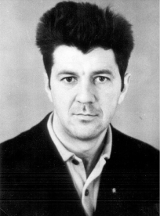
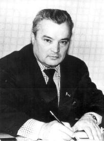
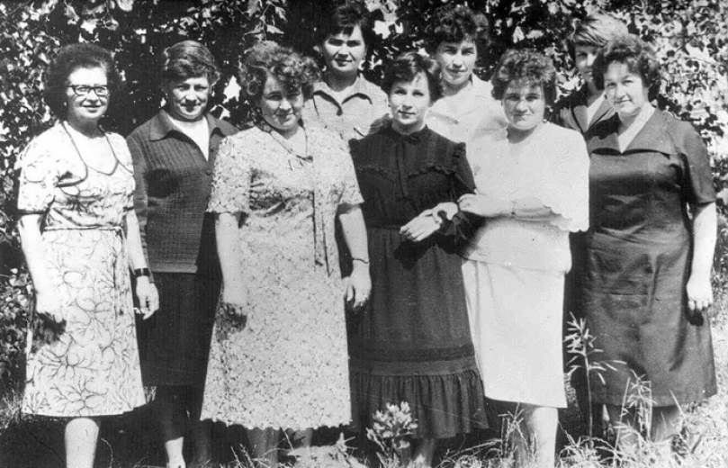
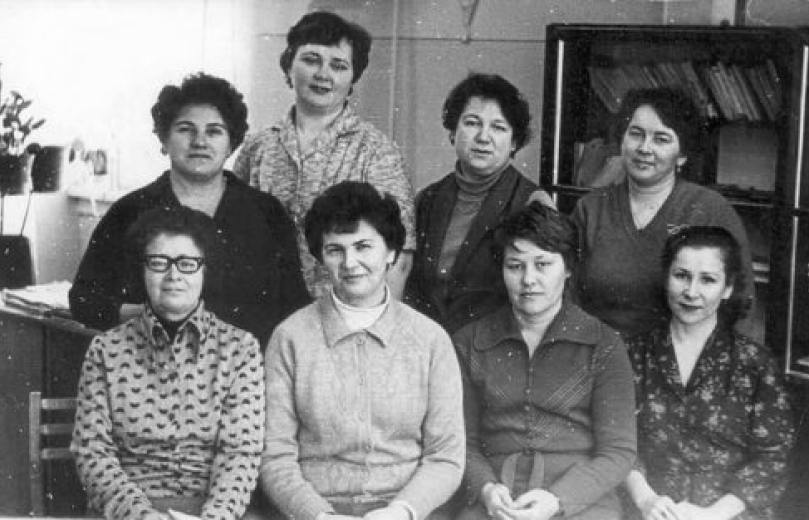
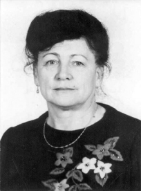

История учебного центра
История всегда начинается с талантливых людей. Это они создают все то новое и прекрасное, которое затем становится привычным. Преодолевая трудности и упорно стремясь к цели, они двигаются вперед. А те принципы, которые лежат в основе их деятельности становятся формулой успеха коллектива в будущем.
Как все начиналось...
Осенью 1964 года в штате химкомбината появилась новая должность – инженер по подготовке кадров. В течение трех лет с начала строительства на предприятие было трудоустроено 99 человек, в связи, с чем возникла необходимость в подготовке и повышении квалификации кадров. C 1964 по 1966 годы на химкомбинате работал лишь один инженер по подготовке кадров - Юрий Владимирович Новик. Молодой специалист, он с энтузиазмом взялся за дело. Эти вопросы находились в ведении технического отдела под руководством Леонида Яковлевича Перлина. Готовили специалистов для трех функционирующих участков: РМЦ, базы оборудования, депо передвижного оборудования.
Обучение проводилось силами специалистов комбината: Тихонова В.Ф., Мангушева Ф.А., Гильмутдинова З.Н., Набиуллина Н.С., в вагончиках и строящихся цехах. Подготовкой лаборантов занималась Орешкина Ксения Федоровна непосредственно в насосной питьевого и пожарного водоснабжения. Тяжелым было и неустройство в вагончиках, и отсутствие специальной литературы. Чтобы лучше разобраться в новом, незнакомом деле, Юрий Владимирович был направлен на курсы повышения квалификации в г. Москву. В течение 1966 года ЦГФУ, ЦЗД, склады, цехи азота, водо- и теплоснабжения, КИПиА и другие пусковые объекты были укомплектованы квалифицированными кадрами. Численность работников химкомбината возросла с 751 до 2131 человека. Почти весь персонал был обучен, прошел стажировку и был допущен квалификационной комиссией к самостоятельной работе. Химкомбинат дал первое направление на учебу в Казанский химико-технологический институт. Первым его стипендиатом стал Шамсутдинов Валерий Гарафович.
В декабре 1966 года руководством химкомбината было принято решение о создании отдела подготовки кадров, начальником которого назначается Василий Иванович Игнатьев. Отдел в составе трех человек разместился в здании цеха КИПиА и работал под руководством помощника директора по кадрам и быту Петра Ивановича Ачаева и главного инженера Семена Моисеевича Каменщика.
Василия Ивановича лично позвал на химию Николай Васильевич Лемаев. «Ты педагог, сумеешь» - сказал он. И Василий Иванович смело взялся за дело. Было нелегко, приходилось оставаться и после окончания рабочего дня.
У Лемаева была удивительная черта руководителя, подход к кадрам, способность знать и изучать их по деловым качествам, отношению к своим обязанностям. Частенько он заходил в кабинет Василия Ивановича Игнатьева, спрашивал, интересовался, как продвигается новое дело. Давал задания, связанные с работой Нефтехимического колледжа и училища № 44.
Николай Васильевич Лемаев, заметив организаторские способности, талант и деловую хватку В.И. Игнатьева, предложил ему возглавить ГПТУ-44, которое стало кузницей кадров предприятия и считалось цехом №1. Долгие годы, занимаясь подготовкой кадров для химкомбината, Василий Иванович постоянно чувствовал поддержку со стороны родного предприятия и неоценимую помощь. Учитывая большие заслуги в деле создания условий для подготовки молодой смены рабочего класса, Николай Васильевич был награжден значком «Отличник ПТО РСФСР», ему присвоено звание «Заслуженный учитель ПТО РСФСР», «Почетный гражданин города». Химики отметили его заслуги званием «Ветеран Нижнекамскнефтехим».
Вот как вспоминает годы своей деятельности бывший начальник отдела подготовки кадров (в 1967-1974 и 1976-1979 годах) Римма Ильясовна Спектрова: «Отдел поддерживал связь с более чем с тридцатью вузами, училищами, нефтехимическим техникумом. Необходимо было обучать специалистов для новых производств, поскольку в год пускали по 2-3 завода. По каждой специальности требовалось готовить программы, организовывать курсы, договариваться о стажировке на однопрофильных предприятиях, принимать экзамены. Большая работа проводилась с молодыми специалистами. Их направляли сначала на стажировку, затем они сдавали серьезный экзамен на знание своего участка. Обучаться за рубеж не отправляли, наоборот, к нам приезжали учиться группы специалистов из Польши, Чехословакии и Румынии на заводы «Этилен – 450» и «Этиленопроводов». Ближайшими её помощниками и соратницами были: Л. Жигач, Л. Скороходова, З. Орехова, Т. Алдонова и А. Шупикова.
В течение двух лет отдел по подготовке кадров возглавляла Э. Петрашова. В этот период коллектив отдела был награжден дипломом Государственного комитета совета Министров СССР по профессионально-техническому образованию за достижение высоких результатов во всесоюзном общественном смотре подготовки и повышения квалификации молодых рабочих на производстве.
С 1980 по 1997 год руководителем отдела технического обучения была Надежда Степановна Долганова - человек большой души, находящийся в непрестанном творческом поиске. Под ее руководством внедрялись новые методы, формы обучения, развивалось наставничество, деловые игры, внедрялись конкурсы лучшего по профессии и многое другое. Вначале 80-х в рамках отдела технического обучения была создана учебно-производственная база в здании ИП 15/1 с пятью специализированными кабинетами: по профессиям (аппаратчик химических производств, машинист технических установок, электрослесарь КИПиА, электромонтер), кабинет по грузоподъемным механизмам и методический кабинет.
В 1982 году отдел технического обучения стал лидером в смотре-конкурсе по подготовке и повышению квалификации работников среди 465 предприятий Министерства нефтехимической промышленности.
Назначение руководителем службы подготовки кадров Анатолия Михайловича Николаева совпало с периодом возросших требований к подготовке и аттестации персонала со стороны Ростехнадзора, лицензирования подготовки кадров. Для курсового обучения рабочих основных нефтехимических профессий, руководством акционерного общества принято решение создания на базе отдела подготовки кадров учебно-курсового комбината. С 1997 года обучение рабочих, обслуживающих опасные производственные объекты, повышение квалификации руководителей и специалистов, организация производственной практики студентов и учащихся базовых учебных заведений осуществляется в Учебном центре по подготовке персонала.